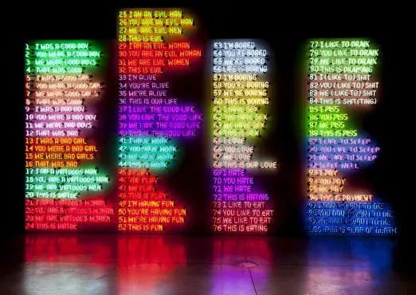

Good Boy, Bad Boy (1985) by Bruce Nauman

"Good Boy, Bad Boy" is the name of an installation artwork created by Bruce Nauman in 1985.
Source: Artchive
It features a 100-line poem written out in multicolored neon lights.
[T]he installation employs two actors, Joan Lancaster and Tucker Smallwood, who are presented in close-up, like newscasters, on two separate monitors.
Source: The Art Institute of Chicago
Both actors recite the poem several times in a row, and the recordings loop.
Directly confronting the viewer, they deliver each repetition with increased emotional intensity, shifting in and out of sync with one another.
Source: The Art Institute of Chicago
At least that's how the artist intended the installation to be experienced. To the best of my knowledge, this exhibit is not currently on display, and I can't determine where the physical parts of the exhibit are located. I would relish the opportunity to see the installation as intended.
All that remains are the video recordings, which have been published online both as a combined work that approximates the experience of the installation and as separate videos of the two actors' performances.
These recordings, especially Joan Lancaster's performance, are how I became familiar with this installation. I was originally shown Joan's performance without any context, which made for an oddly compelling experience. Art is deeply subjective, so I can't explain why this particular piece resonated with me. Some of the lines of the poem have made their way into my everyday lexicon. The work is endlessly memeable without it becoming the butt of the meme, unlike so much other modern art.
The poem

Here's the text of the poem as written in neon, though the actors' recitations vary slightly.
1. I was a good boy
2. You were a good boy
3. We were good boys
4. That was good
5. I was a good girl
6. You were a good girl
7. We were good girls
8. That was good
9. I was a bad boy
10. You were a bad boy
11. We were bad boys
12. That was bad
13. I was a bad girl
14. You were a bad girl
15. We were bad girls
16. That was bad
17. I am a virtuous man
18. You are a virtuous man
19. We are virtuous men
20. This is virtue
21. I am a virtuous woman
22. You are a virtuous woman
23. We are virtuous women
24. This is virtue
25. I am an evil man
26. You are an evil man
27. We are evil men
28. This is evil
29. I am an evil woman
30. You are an evil woman
31. We are evil women
32. This is evil
33. I'm alive
34. You're alive
35. We're alive
36. This is our life
37. I live the good life
38. You live the good life
39. We live the good life
40. This is the good life
41. I have work
42. You have work
43. We have work
44. This is work
45. I play
46. You play
47. We play
48. This is play
49. I'm having fun
50. You're having fun
51. We're having fun
52. This is fun
53. I'm bored
54. You're bored
55. We're bored
56. Life is boring
57. I'm boring
58. You're boring
59. We're boring
60. This is boring
61. I have sex
62. You have sex
63. We have sex
64. This is sex
65. I love
66. You love
67. We love
68. This is our love
69. I hate
70. You hate
71. We hate
72. This is hating
73. I like to eat
74. You like to eat
75. We like to eat
76. This is eating
77. I like to drink
78. You like to drink
79. We like to drink
80. This is drinking
81. I (like to) shit
82. You (like to) shit
83. We (like to) shit
84. This is shit(ting)
85. I piss
86. You piss
87. We piss
88. This is piss
89. I like to sleep
90. You like to sleep
91. We like to sleep
92. Sleep well
93. I pay
94. You pay
95. We pay
96. This is payment
97. I don't want to die
98. You don't want to die
99. We don't want to die
100. This is fear of death
Portions of this post reproducing aspects of "Good Boy, Bad Boy" © 2018 Bruce Nauman / Artists Rights Society (ARS), New York